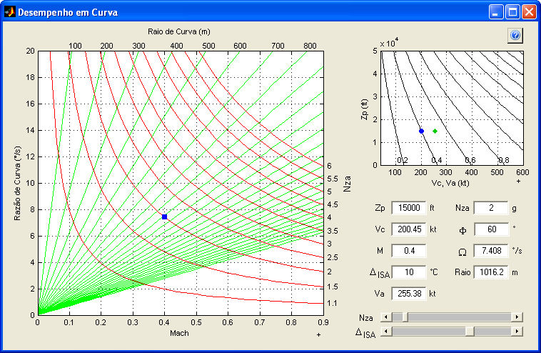
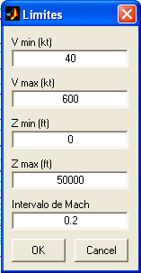

| Menu Ferramentas |
|
Essa ferramenta
permite ao usuário
calcular todas os parâmetros de desempenho em curva (sustentada ou
instantânea) em um dado ponto do envelope de voo. Essa é
uma ferramenta externa ao R_DAT e os parâmetros calculados não têm
relação com os dados das matrizes de trabalho.
Para acessar a
ferramenta, clique em “Ferramentas ► Ferramentas
externas ... ► Desempenho em
curva”.

Descrição e Operação
A janela da
ferramenta possui as seguintes áreas:
Diagrama de Desempenho em Curva:
Diagrama que apresenta as relações
cinemáticas de uma aeronave em curva (sustentada ou instantânea), para
uma dada altitude-pressão e variação de temperatura ISA.
Na abscissa é apresentado o número de Mach, na ordenada é apresentada a
razão de curva (°/s), as retas verdes correspondem a diferentes raios
de curva (m) e as assíntotas vermelhas a diferentes fatores de carga no
sistema aerodinâmico (g). Os valores correspondentes às linhas iso-raio
e iso-Nza são apresentados, respectivamente, na borda superior e na
borda direita do diagrama.
O quadrado azul representa uma condição específica da aeronave, e pode
ser movimentado com o botão esquerdo do mouse.
N
" \ " movimentação sobre uma linha iso-Nza;
" / " movimentação sobre uma linha iso-raio.
Controles de Dados:
No canto inferior direito da janela são apresentados todos os parâmetros relevantes para o desempenho em curva, além de barras de rolagem para variação de Nza e ΔISA.
São
apresentados os seguintes campos:
|
Campo |
Descrição |
Unidade |
|
Zp |
Altitude-pressão |
Pés |
|
Vc |
Velocidade
calibrada |
Nós |
|
M |
Número de Mach |
Adimensional |
|
ΔISA |
Variação de
temperatura ISA |
Graus Celsius |
|
Va |
Velocidade
aerodinâmica |
Nós |
|
Nza |
Fator de carga
no sistema aerodinâmico |
g |
|
Φ |
Inclinação
lateral |
Graus |
|
Ω |
Velocidade angular |
Graus por segundo |
|
Raio |
Raio de curva |
Metros |
Gráfico V
× Z:
N
" \ " movimentação sobre uma linha iso-Mach.
Para alterar os
limites do gráfico

Indique os novos limites desejados para o eixo das velocidades, eixo das altitudes e o intervalo das linhas de Mach e clique "OK".
Também é possível alterar os limites do gráfico definindo um retângulo com o botão esquerdo do mouse na região de interesse. Um duplo-clique com o botão esquerdo restaurará os limites iniciais.
Sair
Para sair da
ferramenta, clique no botão de fechamento da janela no canto superior
direito.
 |
Calculadora anemométrica | Conversor de unidades | |